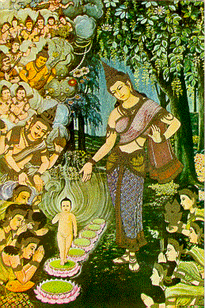
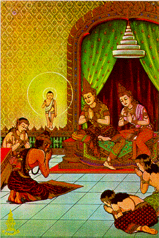

BuddhaSasana Home Page
This document is written in Vietnamese, with
Unicode Times font
| 03 | 04 |
|  |  |
| Birth: On the Full Moon Day of
Vesak month, 625 B.C.E., the Buddha was born in Lumbini Park. Immediately after being
born, he walked for seven steps, and there was a lotus holding him up at every step. He
said he was the most exalted one in the world. Ðản Sanh: Vào đêm trăng tròn tháng tư, năm 625 trước Tây lịch, Ðức Phật ra đời tại vườn Lâm-tì-ni. Sau khi sinh ra, Ngài bước bảy bước, mỗi bước có hiện ra một hoa sen nâng đở chân Ngài. Ngài tuyên bố là Ngài là người đáng tôn thờ nhất. |
When a hermit named Kaladevila
visited the child, the prince mystically appeared on the head of the hermit. King
Suddhodanama, his father, and all the Sakyans bowed before the prince. Khi ẩn sĩ Kaladevila đến thăm hoàng nhi, vị hoàng tử trẻ lập tức hiện ra trên đầu vị ẩn sĩ. Vua Tịnh-phạn, cha của Ngài, và dòng họ Thích-ca, đãnh lễ với Ngài. |
[Mục Lục][01-02][03-04][05-06][07-08][09-10][11-12][13-14]
[15-16][17-18][19-20][21-22][23-24][25-26]][27-28][29-30][31-32]
Source: Post Cards from S. Dhumphakdi & Sons Publisher, Bangkok, Thailand